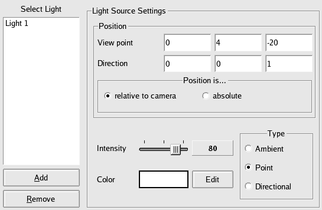

|
| Mouse Button | Effect |
| Left | Rotate left/right and up/down |
| Middle or Wheel | Zoom in and out |
| Right | Translate up/down and left/right |
| Left + Right (first keep one button pressed, than additionally the other) | Rotate (counter) clockwise |
| Double Left Click | Show information for object under cursor (e.g. Atom) |
| Mouse button + key pressed | Effect |
| Left | Rotate left/right and up/down |
| Left + Shift | Zoom in and out |
| Left + Control | Translate up/down and left/right |
| Left + Shift + Control | Rotate (counter) clockwise |
Picking Mode (Identifying parts of molecules)
| Mouse button + key pressed | Effect |
| Left | Select geometric objects, e.g. for atoms |
| Right (or Left + Shift) | Deselect geometric objects |
| Left double click OR Middle | (De-)Select the parent of the object under the cursor (e.g. the Residue of an Atom) |
There is also an other alternative available for identifying atoms: BALLView can show popup informations about the molecular entities under the mouse cursor. To enable this, switch into the Rotate mode and double click on any bond or atom.
Move Mode
In the Move mode, selected atoms can be moved by using the mouse. It can also be used to position Clipping Planes (select Move in the context menu of the Clipping Plane in the Representations list).
| Mouse button + key pressed | Effect |
| Left | Move objects in X and Y direction |
| Middle (or Left + Shift) | Move objects in Z direction |
| Right (or Left + Control) | Rotate objects |
Edit Mode
Since version 1.2 BALLView supports editing of molecules: The 3D view offers a special mode to create and delete atoms / bonds and change bond orders:
| Mouse button + key pressed | Effect |
| Left click on empty space | Create a new atom |
| Left click on atom and drag | Move atom in X and Y direction. |
| Left click on atom and drag + Shift | Move atom in Z direction |
| Double click on atom | Set the atom's element |
| Double click on ring bond | Make whole ring aromatic |
| Double click on bond | Cycle through bond orders |
| Middle (or Left + Control) | Create bond |
| Right | Context Menu for items under cursor |
| Mouse wheel | Zoom in or out |
| Key pressed | Effect |
| H,N,C,O,P,S | Select the element for the next atom |
| D | Delete atom under cursor |
| Backspace | Delete bond under cursor |
The middle click in the edit mode can either create bonds between existing atoms, or if the mouse button is released while not pointing at an existing atom, a new atom is created along with the new bond.
The editing mode allows the creation of new molecules or to modify existing ones. Bonds can be created and deleted, bond orders and formal charges can be set. Furthermore it is possible to saturate molecules with hydrogen atoms and to perform a quick optimization of the currently highlighted System (using the MMFF94 force field).
When a user creates a new bond or wants to move an atom, BALLView by default
only looks for matching atoms in the currently highlighted AtomContainer (e.g. an
highlighted Molecule or Residue).
This enable users e.g. to create ligands in their binding pocket, while keeping
the receptor untouched. To modify this behavior, the Editing Setting in the
Preferences can be used. New atoms are always created in the highlighted AtomContainer.
To ease access to its features, the editing mode also provides some entries in the toolbar list:
| Choose the element for the next atom | |
| Saturate the molecule with hydrogens | |
| Perform a quick optimization |
The editing functionality is optional, it is realized in the class EditableScene. To obtain a slimmer application without the editing functionality, use the class Scene.
Selection Color
Background Color
Setting the Light Sources
BALLView supports multiple light sources, which can also be freely configured, this can be done in the entry "Lighting" in the preferences dialog. Lights can either be set to a static position or they can move along with the camera, when zooming, rotating etc.
- For static lights the position is set in means of absolute cartesian coordinates.
- Relative light sources obtain their position relative to the position of the camera, the right-, up- and view vector. The example below means, that the light source is positioned 20 Å behind the observer and 4 Å units over him. The direction of the light source is set to the view vector.
